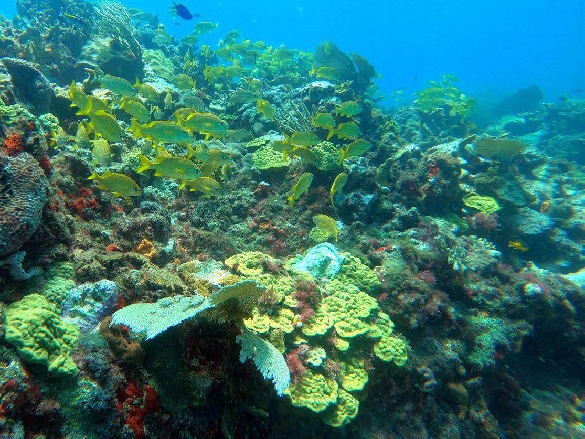

- isla contoy: un area protegida con manglares, especies de duna costera y selva, ideal para la observacion de aves.
| ACTIVIDADES ACUATICAS. |
| SNORKEL EN ARRECIFES:
PERMITE OBSERVAR LA VIDA MARINA EN LA SUPERFICIE O A POCA
PROFUNDIDAD, UTILIZANDO UN EQUIPO DE SNORKEL, QUE INCLUYE UNA
MASCARA, UN TUBO Y ALETAS. |
| NADO CON DELFINES: INTERACTUA CON ESTOS MAMIFEROS EN DIFERENTES PROGRAMAS. |
| PASEOS EN CATAMARAN: NAVEGACION, PARADAS PARA SNORKEL COMIDAS Y BEBIDAS EN CATAMARANS DE LUJO. |
| DEPORTES ACUATICOS: ESQUI ACUATICO, MOTO ACUATICA Y SURF DE REMO. |
| EXCURSIONES DE PESCA: PESCA EN LAS AGUAS DE ISLA MUJERES |
SE CARACTERIZA POR LA COMBINACION
DE LA COCINA YUCATECA CON FUERTES
INFLUENCIAS CARIBEÑAS.
| GASTRONOMIA. |
|
Este
plato es una especialidad de la región, donde el pescado se cocina a
las brasas después de marinarlo en una salsa de achiote y naranja agria.
|
|
Una opción refrescante a base de caracoles de mar, naranja, aguacate y chiles xcatik.
|
|
La carne de cerdo marinado en achiote y cocido al horno, una tradición yucateca.
|
|
La isla ofrece una amplia variedad de mariscos frescos, como langosta, camarones y calamares, preparados de diversas formas.
|
|
Algunos
restaurantes ofrecen platos que combinan la cocina caribeña con la
mexicana, como platos con base de coco y plátano macho.
|
FELIPE CARRILLO PUERTO.
Ubicado en el centro de quitana roo, mexico es conocido por su rica cultura maya, paisajes naturales . el municipio se encuentra en la zona maya entre manglares, lagunas y el mar, ofreciendo un entorno natural unico.
POBLACION.
| 83,990 HABITANTES(2020) |
HISTORIA DEL NOMBRE.
Carrillo
Puerto fue parte de la comisión agraria local, en la que aprovechó su
experiencia en Morelos para que los mayas y campesinos yucatecos recuperaran
sus tierras y pudieran trabajarlas en libertad.
Para entonces, sus lecturas y su experiencia revolucionaria lo había.
Fue rebautizado en honor al político yucateco Felipe Carrillo Puerto.

| TRADICION: felipe carrrillo puerto conserva sus tradiciones milenarias de la cultura maya |
GASTRONOMIA:
|
| ACTIVIDADES |
| N/A |
LAZARO CARDENAS.
El municipio de Lázaro Cárdenas es conocido por diferentes aspectos, tiene una ubicación histórica y natural en el estado de Quintana Roo, su cabecera fue un lugar de asentamiento maya, y es de gran atractivo para turistas nacionales e internacionales, es uno de los estados más turísticos en México. Podrás conocer las maravillas arquitectónicas, naturales, históricas y culturales, entre otras cosas.
Este municipio tiene lo necesario para todos los visitantes, conoceras sus tradiciones, sus costumbres, festejos, actividades para vacacionar y aprovechar su estancia. conozcan su cultura.
| INGRESOS DEL MUNICIPIO |
| En la economia de lazaro, cardenas la agricultura forma parte del sector primario
y ha sido la mas practicada en la region, destacando el cultivo
de maiz, calabaza, chile, tomate,frijol, chile habanero,chile serrano,
hortalizas y frutas como la sandia, naranja y limon |
Isla yalahua.
Es una zona protegida, de manglares, los humedales y las selvas bajas y medianas del norte del estado de quintana roo. Aqui crece el arbol de chicle, el chico zapote, el cedro palo de campeche, ramon y la palma. se ubica a 30 minutos aproximadamente de la isla de holbox es un manantial de aguas critalinas conocidas como "cenote"

Isla pajaros
Es un pequeño islote cubierto de manglar y cáctus y se encuentra en la laguna Yalahau, donde viven una gran diversidad de aves, algunas están en peligro de extinción. Hay miradores y andadores para disfrutar de las aves, garzas, flamencos rosas, cormorán, fragatas, pelícanos blancos y grises, patos silvestres, gaviotas, ibis blanco, gacela blanca, cormorán de doble cresta, gacela roja, espátula rosada, entre muchos másHolbox, recerva de la biósfera, disfruta de esta gran maravilla natural y de su hermosos tonos azulez del color del mar, así como de su deliciosa gastronomía del lugar.

Cuevones.

Isla la pasion.
Pequeño islote ubicado a aproximadamente 10 minutos de distancia de Holbox, y sólo se puede llegar por lancha. Tiene playas vírgenes en donde disfrutarás de agua cálida de la isla, con arena fina y blanca, es un paraíso terrenal para muchos por las vistas panorámicas naturales. Esta isla es considerada un tesoro caribeño, por la naturaleza que hay en el sítio, en donde la flora y fauna ha crecido considerablemente, observarás aves en su hábitad natural, para visitarla y disfrutar de una gran privacidad, el descanso, la meditación y renovación del cuerpo y los sentidos, vivirás experiencias relacionadas con el descanso y el bienestar, con sus aguas color azul turquesa.
Cabo catoche.
| ACTIVIDADES QUE SE PUEDEN REALIZAR. |
|
| COCOS Y PLATANOS MACHOS. |
La influencia caribeña se refleja en la preparación de platos que incluyen estos ingredientes, como postres, ensaladas y platillos salados. |
| PIBIL |
Preparación tradicional de carnes, como venado o cerdo, horneada bajo tierra, con hierbas y condimentos mayas. |
| POLLO PIBIL |
Un plato típico de la región, preparado con pollo horneado bajo tierra con una salsa de achiote y otros ingredientes mayas. |
| QUINTANA ROO |
TULUM + 3 MUNICIPIOS |
CHETUMAL + 4 |
FORMULARIO |